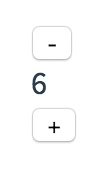
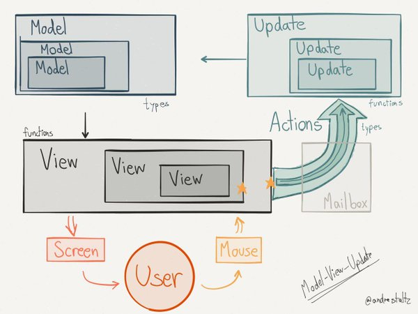

La philosophie Elm en Javascript
Juin 2016 - Paris.js
Frontend OuiCar
- Environ 75.000 lignes de Javascript
- Surtout du React / es6 mais encore du jQuery
- Nombreux développeurs, certains partis
Une des solutions
S'inspirer du langage Elm.

Qu'est-ce que Elm ?
Un langage :
- purement fonctionel
- typé
- compile vers Javascript
Qu'est-ce que Elm ?
Une architecture :

Exemple
Compteur
type alias Model = Int
type Msg = Increment | Decrement
update : Msg -> Model -> Model
update msg model =
case msg of
Increment -> model + 1
Decrement -> model - 1
view : Model -> Html Msg
view model =
div [] [ button [ onClick Decrement ] [ text "-" ]
, div [] [ text (toString model) ]
, button [ onClick Increment ] [ text "+" ] ]Compteur
Apports
- débogage à la compilation (types)
- composabilité
- maintenabilité
- maîtrise des side-effects
Apports
Redux evolves the ideas of Flux, but avoids its complexity by taking cues from Elm.
Documentation Redux.
View
En Elm :
view : Model -> Html
view model =
div [] [ button [ onClick Decrement ] [ text "-" ]
, div [] [ text (toString model) ]
, button [ onClick Increment ] [ text "+" ] ]View
En Javascript : avec React :
class Counter extends Component {
render() {
return (
{this.props.counter}
);
}
}React
La vue devient une fonction :
component : Props -> HTML
Virtual DOM avec diff pour optimiser le rendu :

Bonnes pratiques
TODO
- dumb components
- top-down
- immutabilité -> optimisation du ré-rendu avec composants Pure
- story-book
Model
En Elm :
-- Counter
type alias Model = Int
-- Car
type alias Model =
{ brand : String,
model : String,
km : Int
}
Model
En Javascript :
Pas de typage :/.
Model
En JS + Flow :
// Counter
type Model = number;
// Car
type Model = {
brand: string,
model: string,
km: number
};
Update
-> Redux ; Montrer les types sommes ; parler de l'écosystème Redux : montrer les logs ou Redux dev toolsComposition
Composition
TODO